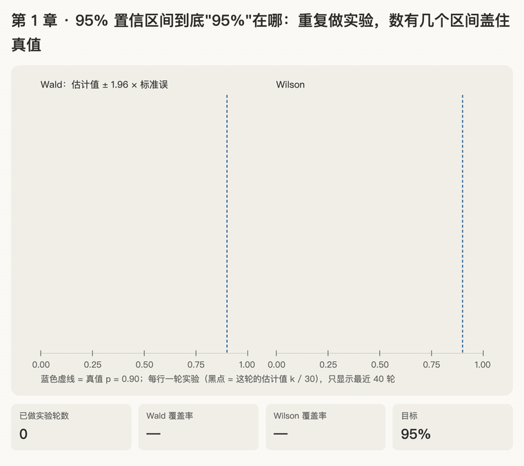
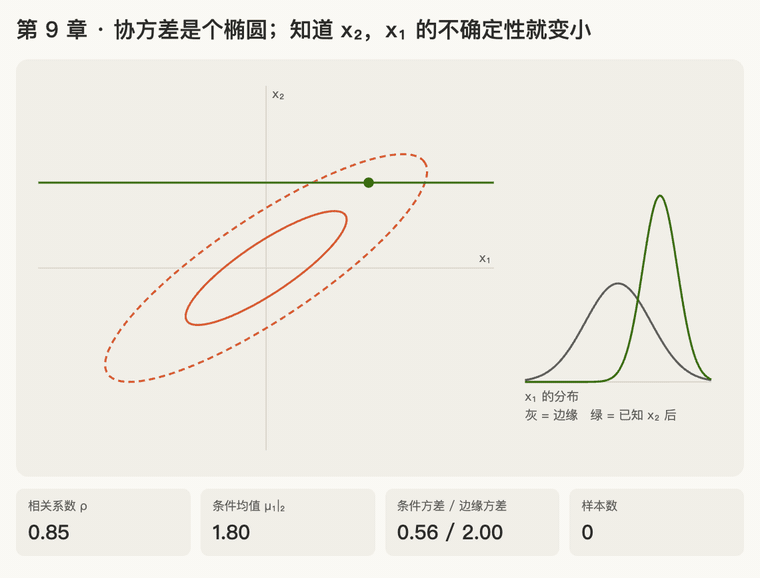
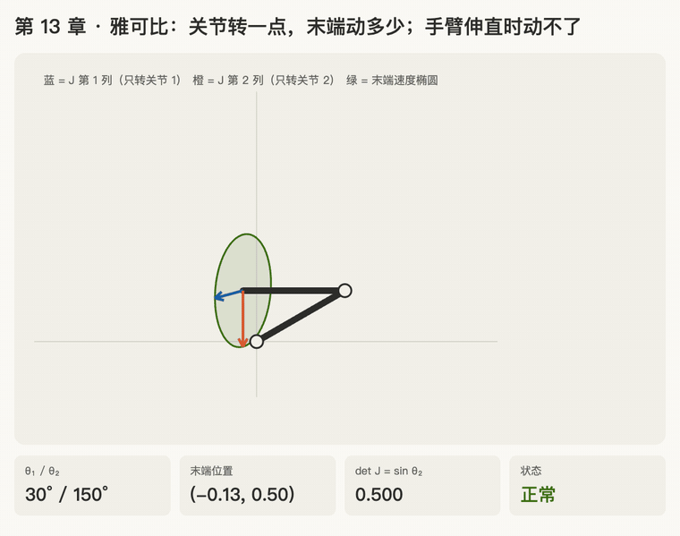
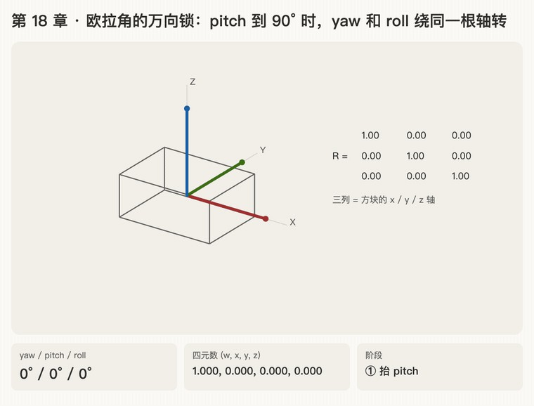

数学与实验统计 · 讲义目录
66 章大纲 · 已写 24 章 · 24 个动画（GIF + 可交互页面）· 57 张静态图 · 85 张复习卡片 · 评测统计在前（第 1–7 章），Physical AI 的数学底座在后（第 8–22 章：概率与信息、线代与微积分、优化、采样与生成、几何估计与动力系统）；深入篇在第 23–34 章（RL / 控制 / 扩散推导与严格理论），应用篇在第 35–66 章（CNN / Transformer / PyTorch、现代 LLM 训练与推理、导航与感知、多模态与 VLN）
在线阅读：https://wikieden.github.io/math-and-eval-stats/（连载中，写完一批发布一批）
这本书讲什么
从"30 次试验成功 21 次"这一个数字讲起：它有多准、两个这样的数怎么比、要测多少次才分得出高下、配对和多任务时怎么算、怎么定 A/B 判定规则，最后落到批判地读 loss 曲线和消融表。后 15 章从 Physical AI 的算法倒推数学：VLA 和动作头要的概率、高斯、KL 与生成模型数学，训练要的线代、自动微分与优化，运控要的 QP 与 Riccati，感知要的旋转、李群与 Kalman，扩散采样要的 ODE 积分器。再往下两篇：深入篇（第 23–34 章）把 RL、LQR / MPC、扩散与 flow 的推导写完整，补测度论、泛函、流形、随机微积分、最优传输、信息几何；应用篇（第 35–66 章）讲 CNN、Transformer、PyTorch 张量背后的数学，现代 LLM 的 scaling law、μP、Muon / SOAP、MoE、分布式账本、KV cache、FlashAttention、量化、投机解码、DPO / GRPO，以及导航感知（多视几何、SLAM、VIO、规划、NeRF / 3DGS）、多模态融合和 VLN。哪个算法用到哪块数学，见 Physical AI 数学需求地图。
- 适合谁：要审实验、做评测、拍板"新模型能不能上"的人。只需要高中数学；缺的概率知识在第 1 章和第 8 章现场补。
- 读完能做什么：当场回答 算法总监路线 · 达标自测 第 1 题（21/30 对 18/30，为什么下不了结论、要测多少次）；给团队的成功率表配上正确的区间；审一张消融表；做 学习计划 的里程碑 ME-M1–M36；读 π0 的 flow 动作头、PPO 的重要性比率、ESKF 的四元数扰动、凸 MPC 的 QP 时，知道每一步数学在干什么。
- 怎么读：按章顺序读；只想学 VLA 或运动控制的，按 章节索引 挑章读。每章先看讲解和动画，再自己做练习，最后用复习卡片隔几天考自己。
讲解的特点
- 一次一小步：每个概念按"白话类比 → 公式（每个符号说清楚怎么读）→ 小数字亲手算一遍"讲。
- 能用图讲的都用图讲：数量不设上限。关键机制做成可交互页面（▶ 播放、→ 单步、↺ 重来，有参数的配滑块），讲义里嵌 GIF；数字之间的关系画成图表，结构和流程画成静态图。
- 对照原文：讲到原文的地方标本地文本行号（如 NIST §7.2.4.1 L22–L27），引用原句。
- 保留真实的学习过程：练习与作答记录里是学习时的原话、对错和点评。
- 术语不设门槛：缩写第一次出现就给英文全称并逐词解释，全书缩写见 缩写与术语表。
- 每章都有代码对照：讲义里的数字用 Python（NumPy、SciPy）算一遍，配测试核对；只算讲过的例子，不提前给练习答案。
- 每章收尾有口诀：全部口诀汇总在本页末尾。
示例动画
| 动画 | 章 | 演什么 |
|---|---|---|
 |
第 1 章 一个成功率有多准 · ▶ 交互 | 重复做"测 n 次"的实验，数区间盖住真值的比例：Wald 名义 95%、实际约 81%；Wilson 约 97% |
 |
第 2 章 两个成功率比一比 · ▶ 交互 | 在"两者一样"的世界里重做 A/B 实验，红色尾巴的比例就是 p 值 |
 |
第 8 章 概率补课 · ▶ 交互 | 逐个加试验结果，看 MLE 和 MAP 怎么移动、先验什么时候被压过 |
 |
第 9 章 高斯分布 · ▶ 交互 | 协方差椭圆；已知 x₂ 后 x₁ 的分布变窄 |
 |
第 13 章 微积分与自动微分 · ▶ 交互 | 雅可比两列与速度椭圆，手臂伸直时压成一条线 |
 |
第 18 章 3D 旋转 · ▶ 交互 | pitch 到 90° 后 yaw、roll 同时转，方块不动 |
 |
第 24 章 策略梯度推导 · ▶ 交互 | 同一串随机数，减基线后梯度估计更集中、学得更稳 |
其他入口
- 复习卡片（ST01 起）
- 按目标读：学 VLA、学运动控制的章节索引（每条一条最短路径 + 分阶段必读 / 选读，对到 VLA 和运控讲义的章）
- 学习计划与里程碑
- Physical AI 数学需求地图（算法 → 数学 → 章节）
- 材料清单
- 代码对照
全流程总览
一个成功率（第 1 章）── 有多准：SE、Wilson 区间
│
两个成功率（第 2 章）── 差多少、是不是运气：差值区间、p 值
│
要测多少次（第 3 章）── 功效、MDE、样本量 ← 锚点题：21/30 vs 18/30
│
怎么测更省（第 4 章）── 配对、同初始条件交替跑
│
换个角度（第 5 章）──── bootstrap、Beta 后验、P(B > A)
│
怎么拍板（第 6 章）──── 先定规则、不偷看、多重比较校正、多任务汇总
│
审别人的实验（第 7 章）── loss 曲线、消融表、种子方差
│
概率与信息（8–10）──── 期望 / MLE / MAP → 高斯 → 熵 / 交叉熵 / KL
│
线代与微积分（11–13）── 矩阵 / 秩 / 特征 → SVD / 最小二乘 → 梯度 / Jacobian / autodiff
│
优化（14–15）────────── GD / Adam / 牛顿 → 拉格朗日 / KKT / QP
│
采样与生成（16–17）──── 重要性采样 / CEM / MPPI → ELBO / score / flow matching
│
几何、估计与动力系统（18–22）── 旋转 / SE(3) → 李群 → Kalman / 因子图 → ODE / LQR / Bellman → 数值稳定
│
深入篇（23–34）──────── RL 推导 → LQR / MPC 推导 → 扩散 / flow 推导 → 测度论 / 泛函 / 流形 / 随机微积分 / 最优传输 / 信息几何
│
架构篇（35–40）──────── 卷积 → CNN 训练 → 注意力 → 位置编码 → 归一化 → 张量
│
LLM 篇（41–51）──────── scaling law → μP → 优化器 → 稳定性 → MoE → 分布式账 → 推理成本 → 高效注意力 → 量化 → 解码 → 后训练
│
导航感知篇（52–60）──── 相机 → 多视几何 → 点云配准 → SLAM → VIO → 地图 → 规划 → NeRF / 3DGS → 检测评测
│
多模态与 VLN 篇（61–66）── 融合 → 视觉-语言对齐 → 非图像模态 → 标定对齐 → VLN 评测 → VLN 决策
| 步 | 做什么 | 为什么 |
|---|---|---|
| 1 | 给单个成功率配区间 | 30 次试验的误差约 ±16 个点，比常见的"提升"还大 |
| 2–3 | 比较两个成功率，算要多少次 | 锚点题的两半：下不了结论 + 要测多少次 |
| 4 | 配对设计 | 同样的结论，配对能少测很多次 |
| 5 | bootstrap 与贝叶斯 | 指标复杂时、或要回答"B 比 A 好的概率" |
| 6 | 判定规则与多重比较 | 测 20 个任务总有一个"显著"；偷看到显著就停会骗自己 |
| 7 | 读曲线和消融表 | 负责人每周都在做的事 |
| 8–10 | 概率与信息 | 行为克隆、动作头、PPO 的 KL、VAE 都是这几个量 |
| 11–13 | 线代与微积分 | 矩阵乘法、LoRA、IK 的雅可比、反向传播 |
| 14–15 | 优化 | 训练器、SLAM 的高斯-牛顿、MPC 和全身控制的 QP |
| 16–17 | 采样与生成 | PPO / off-policy 的比率、MPPI、扩散与 flow 动作头 |
| 18–22 | 几何、估计与动力系统 | 动作的旋转表示、状态估计、LQR / Bellman、扩散采样步与混合精度 |
| 23–34 | 深入篇 | 把常用算法的推导补完整，读论文附录时不卡在数学上 |
| 35–40 | 架构篇 | CNN、Transformer、PyTorch 每个设计背后的那一行数学 |
| 41–51 | LLM 篇 | 训练预算、调参、优化器、稳定性、部署成本和后训练，都能算账 |
| 52–60 | 导航感知篇 | 从相机到地图到规划的几何与优化 |
| 61–66 | 多模态与 VLN 篇 | 多传感器怎么融合、语言怎么对上视觉和路径、VLN 怎么评 |
目录
| 章 | 主题 | 一句话精要 | 动画 | 卡片 | 状态 |
|---|---|---|---|---|---|
| 1 | 一个成功率有多准 | p̂ 是估计；SE = √(p̂(1−p̂)/n)；小样本靠边用 Wilson；半宽 ∝ 1/√n；95% 是方法的覆盖率 | 覆盖率 | ST01–ST05 | ✅ 讲解（练习待作答） |
| 2 | 两个成功率比一比 | 差值 SE 是两份方差相加；p 值 = 零假设下这么极端的概率；小样本用 Fisher；区间重叠 ≠ 不显著 | 零假设下的差值 | ST06–ST10 | ✅ 讲解（练习待作答） |
| 3 | 要测多少次 | 一类 / 二类错误、功效 80%、MDE；样本量公式；"10 个点要几百次" | GIF | ST31–ST33 | ✅ 讲解（练习待作答） |
| 4 | 配对比较 | 同一初始条件 A/B 交替跑；McNemar 只看不一致的对；配对降方差 | GIF | ST34–ST35 | ✅ 讲解（练习待作答） |
| 5 | Bootstrap 与 Beta 后验 | 重抽样估区间；Beta(1+k, 1+n−k)；P(B > A) | GIF | ST36–ST38 | ✅ 讲解（练习待作答） |
| 6 | A/B 判定规则与多重比较 | 先写判定规则再测；偷看提前停；Bonferroni / Holm；多任务多种子用 IQM + 分层 bootstrap | GIF | ST39–ST42 | ✅ 讲解（练习待作答） |
| 7 | 批判地读 loss 曲线和消融表 | 种子方差、平滑、过拟合、评测漂移；审稿追问清单 | GIF | ST43–ST45 | ✅ 讲解（练习待作答） |
| 8 | 概率补课：期望方差、贝叶斯、MLE 与 MAP | 平均的方差除以 n；先验低时检测器误报多；伯努利 MLE = k/n；MAP 往中间拉；行为克隆 = NLL | 似然与后验 | ST11–ST14 | ✅ 讲解（练习待作答） |
| 9 | 高斯分布 | 协方差 = 椭圆（特征分解）；线性变换还是高斯；条件方差只减不增；高斯头 log 概率；单峰平均撞墙 | 二维高斯与条件分布 | ST15–ST18 | ✅ 讲解（练习待作答） |
| 10 | 信息论：熵、交叉熵、KL | 交叉熵 = 负对数似然；KL ≥ 0 且不对称，正向 / 反向 KL 各偏向什么；互信息 | GIF | ST46–ST48 | ✅ 讲解（练习待作答） |
| 11 | 线代一：矩阵乘法、秩、特征分解 | 矩阵乘法三种看法；秩；特征分解；正定与二次型（LQR 代价、Hessian） | GIF | ST49–ST51 | ✅ 讲解（练习待作答） |
| 12 | 线代二：SVD、低秩、最小二乘 | SVD 与最优低秩近似、LoRA 参数量；最小二乘 = 正交投影；伪逆、条件数 | GIF | ST52–ST55 | ✅ 讲解（练习待作答） |
| 13 | 多元微积分与自动微分 | 梯度、雅可比（det J = sin θ₂）；链式法则 = 雅可比相乘；反向模式算 VJP；中心差分核对 | 两连杆雅可比 | ST19–ST22 | ✅ 讲解（练习待作答） |
| 14 | 无约束优化 | 步长与收敛、动量、Adam / AdamW、warmup + cosine、梯度裁剪；牛顿、高斯-牛顿、LM | GIF | ST56–ST59 | ✅ 讲解（练习待作答） |
| 15 | 约束与凸优化 | 拉格朗日、KKT、凸性判断、QP 标准形；MPC、全身控制、带限位 IK 写成 QP | GIF | ST60–ST62 | ✅ 讲解（练习待作答） |
| 16 | 蒙特卡洛与采样 | MC 误差 ∝ 1/√N；重要性采样（PPO 比率、off-policy）；基线降方差；CEM、MPPI 加权 | GIF | ST63–ST65 | ✅ 讲解（练习待作答） |
| 17 | 生成模型的数学 | 潜变量与 ELBO、重参数化、score、SDE / ODE 视角、连续性方程、flow matching 目标 | GIF | ST66–ST68 | ✅ 讲解（练习待作答） |
| 18 | 3D 旋转与刚体变换 | 旋转矩阵四性质；万向锁；Rodrigues；四元数半角与双覆盖；网络输出用 6D；SE(3) 求逆 | 欧拉角与万向锁 | ST23–ST26 | ✅ 讲解（练习待作答） |
| 19 | 李群入门 | SO(3) / SE(3) 的 exp / log、切空间扰动、左右雅可比、SLERP 与旋转平均 | GIF | ST69–ST71 | ✅ 讲解（练习待作答） |
| 20 | 状态估计 | 预测 + 更新两步；Kalman 增益；EKF / ESKF；UKF 与粒子滤波各适合什么；因子图 = 非线性最小二乘 | GIF | ST72–ST75 | ✅ 讲解（练习待作答） |
| 21 | 动力系统与控制的数学 | 状态空间、线性化、ZOH 离散化、特征值判稳定、Riccati 与 LQR、Bellman 是不动点方程 | GIF | ST76–ST78 | ✅ 讲解（练习待作答） |
| 22 | 数值计算 | Euler / Heun / RK4 与扩散采样步数；logsumexp；float16 / bfloat16；病态问题 | GIF | ST79–ST82 | ✅ 讲解（练习待作答） |
| 23 | MDP 与 Bellman 的完整推导 | 值函数、Bellman 期望 / 最优方程、压缩映射与值迭代收敛 | GIF | ST83–ST85 | ✅ 讲解（练习待作答） |
| 24 | 策略梯度推导 | 似然比搬梯度；环境项消失；基线不偏降方差；PPO 只截得利侧；GRPO 组内归一化 | REINFORCE 与基线 | ST27–ST30 | ✅ 讲解（练习待作答） |
| 25 | LQR 与 Riccati | 动态规划推 Riccati、有限 / 无限时域、可控性 | — | — | ⬜ |
| 26 | 轨迹优化与 MPC | 线性化后写成 QP（稠密 / 稀疏形式）、iLQR 的二阶展开与回传、MPPI 的路径积分推导 | — | — | ⬜ |
| 27 | 扩散模型推导 | 前向闭式、后验 \(q(x_{t-1}\mid x_t,x_0)\)、ELBO 到噪声预测损失、DDIM、Tweedie 公式与 score | — | — | ⬜ |
| 28 | Flow matching 推导 | 概率路径、条件与边际目标等价、rectified flow、π0 动作头的训练与采样 | — | — | ⬜ |
| 29 | 测度论概率入门 | σ-代数、测度、Lebesgue 积分与期望、密度 = Radon-Nikodym 导数、条件期望、收敛方式与大数定律 / CLT 的严格陈述 | — | — | ⬜ |
| 30 | 泛函分析入门 | 赋范空间、Banach / Hilbert 空间、算子与谱、Banach 不动点定理（Bellman 收敛）、再生核 Hilbert 空间（RKHS）与核方法 | — | — | ⬜ |
| 31 | 微分几何与流形优化 | 流形、切空间、黎曼度量、测地线、黎曼梯度与收缩映射（retraction）、和第 19 章李群接上 | — | — | ⬜ |
| 32 | 随机微积分 | 布朗运动、Itô 积分与 Itô 引理、SDE 的数值解、Fokker-Planck 方程、反向时间 SDE、概率流 ODE | — | — | ⬜ |
| 33 | 最优传输 | Monge / Kantorovich、Wasserstein 距离、熵正则与 Sinkhorn、动态最优传输与 flow matching 的联系 | — | — | ⬜ |
| 34 | 信息几何 | Fisher 信息、自然梯度、KL 的局部二阶近似、TRPO / PPO 的信任域视角 | — | — | ⬜ |
| 35 | 卷积的数学 | 卷积 = 稀疏共享权重的线性映射（Toeplitz）、互相关与卷积、尺寸公式（填充 / 步长 / 空洞）、感受野、卷积定理与 FFT、im2col = 矩阵乘法 | — | — | ⬜ |
| 36 | CNN 训练的数学 | 卷积的反向传播与转置卷积、Xavier / He 初始化的方差推导、BatchNorm 的统计与梯度、残差的梯度流 | — | — | ⬜ |
| 37 | 注意力的数学 | 缩放点积与 \(\sqrt{d}\) 的方差推导、softmax 温度与饱和、注意力 = 核平滑 / 软检索、多头的低秩视角、因果 mask | — | — | ⬜ |
| 38 | 位置编码的数学 | 正弦编码、RoPE = 复数旋转与相对位置、长度外推（位置插值、NTK、YaRN）、ALiBi | — | — | ⬜ |
| 39 | 归一化与信号传播 | LayerNorm / RMSNorm 的几何、Pre-LN vs Post-LN 的梯度、深层网络的方差传播 | — | — | ⬜ |
| 40 | 张量的数学（PyTorch） | stride 与索引映射、广播规则、einsum 记号、视图与连续性、计算图上的 VJP 组合 | — | — | ⬜ |
| 41 | Scaling law | 幂律与 log-log 拟合、Kaplan vs Chinchilla、计算最优 N / D、6ND 计算账、外推误差 | — | — | ⬜ |
| 42 | 参数化与初始化 | 标准参数化 vs μP、超参从小模型迁移、宽度缩放下的学习率 | — | — | ⬜ |
| 43 | 现代优化器 | Adam 的预条件视角、Shampoo / SOAP（Kronecker 预条件）、Muon（Newton-Schulz 正交化）、Lion（符号更新）、WSD 调度、梯度噪声尺度与临界批量 | — | — | ⬜ |
| 44 | 训练稳定性 | loss spike、logit 增长与 z-loss、QK-norm、梯度裁剪、bf16 / fp8 的数值范围与缩放因子 | — | — | ⬜ |
| 45 | MoE 的数学 | 门控与 top-k、负载均衡辅助损失、无辅助损失的偏置调节、容量因子、专家并行的通信量 | — | — | ⬜ |
| 46 | 分布式训练账本 | 显存四项（参数 / 梯度 / 优化器状态 / 激活）、ZeRO 分片、DP / TP / PP 通信量公式、流水线气泡、all-reduce 成本模型 | — | — | ⬜ |
| 47 | 推理成本模型 | roofline 与算术强度、prefill vs decode、KV cache 大小公式、批处理与延迟的权衡 | — | — | ⬜ |
| 48 | 高效注意力与序列模型 | online softmax 与 FlashAttention 分块、MQA / GQA、MLA 低秩 KV、稀疏注意力（NSA）、线性注意力与 SSM 的并行扫描（Mamba） | — | — | ⬜ |
| 49 | 量化的数学 | 均匀量化的 scale / zero-point、舍入误差方差、per-channel / group、离群值、GPTQ 的二阶误差补偿、AWQ、SmoothQuant 的等价变换、FP8 / FP4 格式 | — | — | ⬜ |
| 50 | 解码与采样 | 温度、top-k / top-p、beam search、投机解码（拒绝采样为什么不改分布）、Medusa / EAGLE、约束解码 | — | — | ⬜ |
| 51 | 后训练的数学 | SFT = MLE；Bradley-Terry 奖励模型；KL 正则目标与闭式最优策略；DPO 推导；GRPO / 推理 RL 的优势归一化 | — | — | ⬜ |
| 52 | 相机几何 | 针孔模型、内参 / 外参、畸变模型、反投影、逆透视变换与 BEV（Lift-Splat-Shoot） | — | — | ⬜ |
| 53 | 多视几何 | 对极约束、本质 / 基础矩阵、单应、三角化、PnP、RANSAC 迭代次数公式；DUSt3R 怎么绕开这条流水线 | — | — | ⬜ |
| 54 | 点云与配准 | 最近邻与 KD 树、Procrustes / Kabsch（SVD 求最优旋转）、ICP（点到点 / 点到面）、法向量 = 局部协方差的最小特征向量 | — | — | ⬜ |
| 55 | SLAM 的优化 | 重投影误差与 BA、稀疏 Hessian 与 Schur 补、位姿图、鲁棒核（Huber / Cauchy）、边缘化 | — | — | ⬜ |
| 56 | VIO | IMU 运动学与噪声 / 偏置模型、流形上的预积分、紧耦合滑窗、可观测性 | — | — | ⬜ |
| 57 | 地图表示 | 占用栅格的 log-odds 贝叶斯更新、TSDF / ESDF、体素与八叉树、语义地图 | — | — | ⬜ |
| 58 | 路径规划 | 图搜索（Dijkstra、A* 与可采纳启发）、构型空间、采样规划（PRM、RRT、RRT* 渐近最优）、代价地图与势场 | — | — | ⬜ |
| 59 | 神经场景表示 | 体渲染积分与 α 合成、NeRF 的位置编码、3DGS 的协方差投影雅可比与球谐颜色 | — | — | ⬜ |
| 60 | 感知的学习与评测 | IoU、NMS、PR 曲线与 mAP、匈牙利匹配（DETR）、度量学习与地点识别（三元组损失、NetVLAD、InfoNCE） | — | — | ⬜ |
| 61 | 多模态融合的数学 | 逆方差加权（Kalman 的特例）、早 / 中 / 晚融合、交叉注意力与 Perceiver 潜变量、模态缺失与模态 dropout | — | — | ⬜ |
| 62 | 视觉-语言对齐 | CLIP 对比损失与温度、SigLIP 的 sigmoid 损失、InfoNCE 与互信息下界、零样本分类 = 余弦相似度、视觉 token 化（patch、Q-Former、投影器）与 token 数账、ImageBind | — | — | ⬜ |
| 63 | 非图像模态的表示 | 点云的置换不变（PointNet 对称函数）、体素化与稀疏卷积、音频的 STFT / Mel 频谱、力 / 触觉阵列、本体感受的归一化 | — | — | ⬜ |
| 64 | 多传感器标定与对齐 | 外参标定（手眼 AX = XB）、时间同步与插值（含 SO(3) 上的插值）、相机-激光雷达投影、BEVFusion | — | — | ⬜ |
| 65 | VLN 的几何与评测 | 指令-轨迹对齐（DTW、nDTW、SDTW）、SPL、拓扑图与图搜索、前沿探索、语言特征投到俯视地图（VLMaps） | — | — | ⬜ |
| 66 | VLN 的序列决策 | POMDP 与信念状态、行为克隆误差 O(T²) 累积与 DAgger 的 O(T)、语言条件策略、探索的信息增益 | — | — | ⬜ |


后续大纲
第 2–66 章各自对应的材料和里程碑见 学习计划 · 逐章计划。讲到时再微调。
口诀汇总
第 1 章 一个成功率有多准
一勺汤不是一锅汤，七成背后正负十五；
靠零靠一 Wald 塌，Wilson 往中拉一拉；
想窄一半测四倍，九五说的是方法。
第 2 章 两个成功率比一比
两秤称重误差叠，差值区间跨零别下结论；
无罪推定先当一样，p 值问的是有多罕见；
小样本用 Fisher 算，区间重叠不算数；
差值、区间、p 值，三样一起报。
第 3 章 要测多少次
误报 α 漏报 β，没检出不等于没差别；
功效查表：差值除 SE 再减一点九六；
次数等于 z 和平方乘方差，再除差值平方；
开测先算 MDE，期望比它小，测了也白测。
第 4 章 配对比较
同一张卷子比高低，初始条件对齐还要交替盲测；
当成独立来检验，难易波动白算进误差；
McNemar 只看一对一错，H₀ 下一半对一半；
方差减掉两倍协方差，相关 ρ 越大省得越多。
第 5 章 Bootstrap 与 Beta 后验
有放回重抽几万次，分位数就是区间，什么统计量都能套；
均匀先验加 k 次成功，后验是贝塔 1 加 k、1 加 n 减 k；
两个后验各抽一个比大小，胜率就是 B 更好的概率；
多任务多种子分层抽，任务不动只抽种子。
第 6 章 A/B 判定规则与多重比较
先写规则再开测，偷看一次多一分误报；
比得越多越容易撞上，一减零九五的 k 次方；
Bonferroni 除以 m，Holm 从小到大逐个放宽；
多任务报 IQM 加区间，题目成组用聚类标准误。
第 7 章 批判地读 loss 曲线和消融表
先问换种子差多少，差值小于标准差就别下结论；
均值差不如赢的概率，几十个种子才分得清一个点；
平滑像看后视镜，β 越大拖得越久；
训练降了看验证，五个问题逐个问。
第 8 章 概率补课
期望是长期账本，方差量散有多宽；
n 次平均除以 n，标准误按根号缩；
先验低时阳性假，后验似然乘先验；
似然最大挑参数，克隆就是 NLL。
第 9 章 高斯分布
小误差叠成一口钟，±2σ 九成五；
协方差是个椭圆，特征向量定方向；
线性变换还是高斯，采样加噪一条线；
知道一个缩另一个，单峰平均会撞墙。
第 10 章 信息论
熵是平均意外，越平越大越尖越小；
交叉熵用错的地图走路，就是负对数似然；
KL 是多走的冤枉路，不对称不是距离；
正向盖全、反向挑峰；互信息是重叠的那一块。
第 11 章 线代一
乘法三种看：点积表、列的组合、外积相加；
列是基向量的去处，行列式是面积的倍数；
秩是独立方向数，秩不满就有零空间；
对称矩阵转拉转，特征值全正才是朝上的碗。
第 12 章 线代二
任何矩阵转拉转，奇异值平方是 AᵀA 的特征值；
留前 k 个最省事，误差就是丢掉的那几个；
LoRA 两根瘦矩阵，参数 r 乘 d 加 k；
最小二乘是垂直投影，条件数大就加阻尼。
第 13 章 多元微积分与自动微分
偏导拼成梯度，指向最陡上坡；
雅可比是导数表，行列为零就奇异；
链式法则矩阵乘，关节速度乘出末端；
一个 loss 反向推，求导记得差分核。
第 14 章 无约束优化
步长小于二除 L，最陡方向说了算；
动量像滚球，来回抵消、一路加速；
Adam 按二阶矩归一，每步约走 lr；AdamW 衰减拿出来单做；
先 warmup 后余弦，裁剪按范数；拟合用高斯-牛顿，怕跳过头就加阻尼成 LM。
第 15 章 约束与凸优化
山路最低点，坡度垂直于路，梯度和法向平行；
λ 是影子价格，约束放松一点赚多少；
墙边球：可行、μ 非负、驻点、互补松弛；
凸则局部即全局，限位 IK、MPC、全身控制都是 QP。
第 16 章 蒙特卡洛与采样
扔石子估湖面，误差根号 n 分之一，和维度无关；
去山顶抽人再换算，权重 p 比 q，提议分布要盖住关键处；
PPO 的比率是权重，截断防止爆方差；
CEM 留精英，MPPI 按 e 的负代价除温度加权。
第 17 章 生成模型的数学
log p 等于 ELBO 加 KL，推高 ELBO 一举两得；
重参数化把随机挪出去，score function 只看概率，方差大要基线；
墨水跟着水流走，浓度变化等于净流入；
每辆车猜自己的方向，学到的就是路口的平均。
第 18 章 3D 旋转与刚体变换
三列就是三根轴，转置求逆不交换；
中间转到九十度，偏航横滚锁一起；
四元半角无万向，q 和负 q 同一转；
网络输出用 6D，位姿四乘四串起。
第 19 章 李群入门
弯的群贴平地图，Exp 卷回、Log 摊开，轴角就是切向量；
群上不对易，先北后东不等于先东后北，更新写成 R 乘 Exp δ；
切空间加小量要乘右雅可比，SE(3) 平移乘 V；
SLERP 走大圆，直接平均不是旋转。
第 20 章 状态估计
数步子预测、摸墙更新，不确定一扩一收；
K 是信测量的比例，先验越糙、测量越准，K 越大；
非线性就在当前点拉直线，姿态误差在切空间里估；
多峰用粒子，全局用因子图，回环把误差摊回每一步。
第 21 章 动力系统与控制的数学
门口街道看着平，平衡点处线性化，特征值定命运；
连续看实部、离散看模，倒立摆有一个越界；
零阶保持积一周期，A_d 是矩阵指数；
LQR 用二次代价换线性反馈，R 小就激进；Bellman 是不动点，xᵀPx 就是值函数。
第 22 章 数值计算
积分器有阶数，翻倍步数误差除二的 p 次方，采样步就是积分步；
softmax 先减最大值，结果不变不上溢；
半精度加小数会被吞，累加和优化器留 fp32；
相近数别相减，病态问题算法救不了。
第 23 章 MDP 与 Bellman 的完整推导
存折的价值等于本月利息加打折的下月，期望方程解一个线性方程组；
最优方程带 max，值迭代反复套；
算子是 γ 压缩，不动点唯一，从哪出发都收敛；
迭代次数约 log 除 1 减 γ；策略迭代评估加贪心，几轮就停。
第 24 章 策略梯度推导
参数藏在概率里，似然比把梯度搬；
对数一拆环境掉，回报加权克隆样；
基线期望恒为零，减掉平均方差降；
PPO 只截得利侧，GRPO 组内比短长。